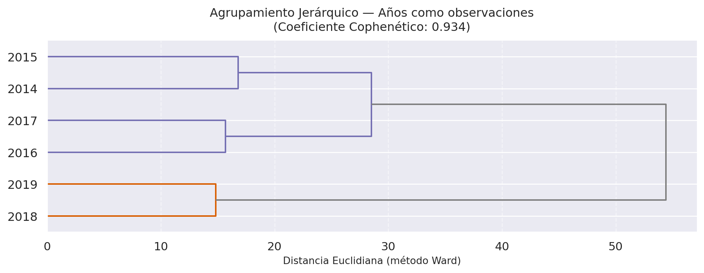
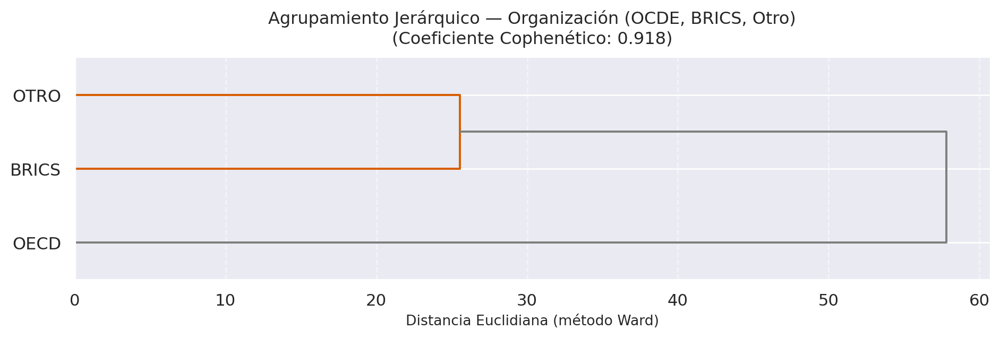
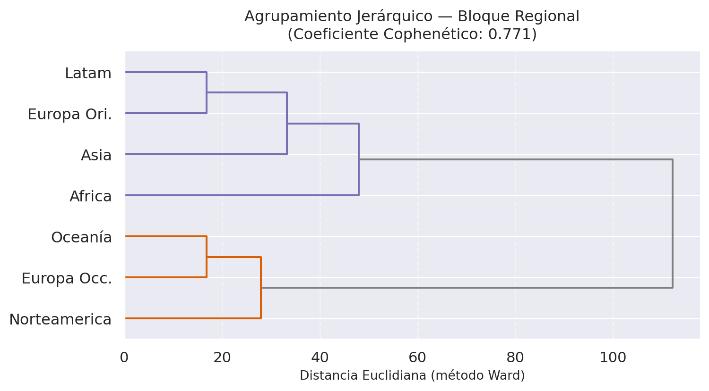
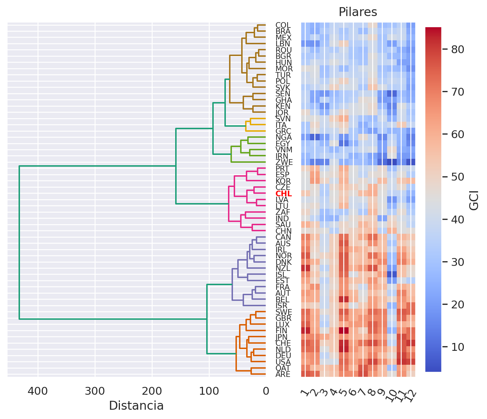

Agrupamiento y Biplot
1 Agrupamiento Jerárquico
El agrupamiento jerárquico construye una jerarquía de similitudes entre objetos basándose en la matriz de distancias euclidianas entre sus perfiles de puntajes. Aquí lo aplicamos agrupando años, organizaciones, bloques regionales y países, tomando como variables los 12 pilares.
1.1 Agrupamiento por año
Resultado clave: el dendrograma separa claramente dos grupos — 2014–2017 vs. 2018–2019. Con un coeficiente Cophenético de ~0.98, este agrupamiento captura fielmente la geometría real de los datos. La brecha entre ambos grupos es la “huella” del cambio metodológico.
1.2 Agrupamiento por organización

1.3 Agrupamiento por bloque regional

1.4 Agrupamiento por país (con mapa de calor)
Coeficiente Cophenético: 0.76
2 HJ-Biplot
El HJ-Biplot proyecta simultáneamente países (puntos) y pilares-año (vectores) en el plano de máxima variabilidad, ofreciendo una representación de igual calidad para ambos. Los países son los individuos y las combinaciones Pilar-Año las variables.
Varianza explicada:
· Eje 1: 63.80 %
· Eje 2: 7.30 %
· Eje 3: 6.05 %
· Eje 4: 3.88 %Cómo leer el Biplot: el eje 1 (~64 % de varianza) separa economías emergentes (izquierda) de economías consolidadas (derecha). El eje 2 (~7 %) discrimina principalmente según tamaño de mercado (pilar 10) hasta 2017; desde 2018, pasa a ser dominado por pilares de infraestructura y salud. Los vectores del pilar 10 en 2018–2019 son notablemente más cortos — señal de pérdida de poder discriminante tras el rediseño conceptual.